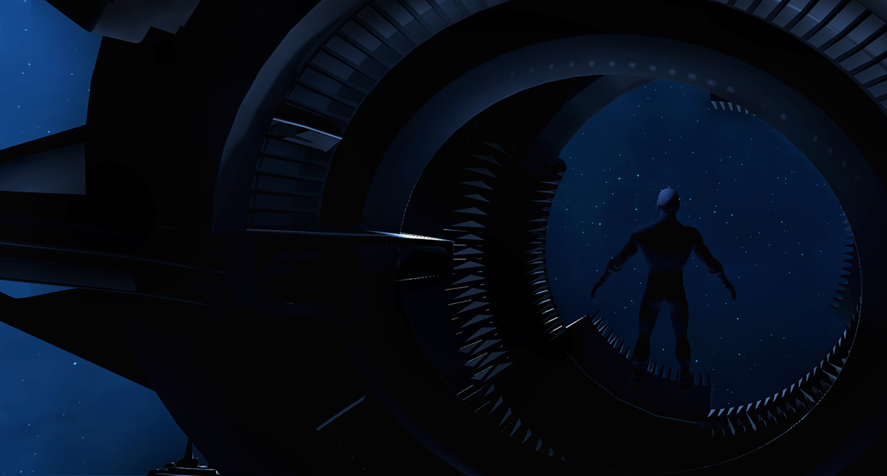

VR Prototype: Peripersonal Space
Challenge
How might our sense of the space, which immediately surrounds us, change as we interact in the virtual world?
Solution
A VR experience that measures the expanse (or shrinkage) of our peripersonal space. The prototype is an HTC VIVE interpretation of a paper titled "The sense of agency shapes body schema and peripersonal space" (D' Angelo et al, 2018). I prototyped using Unity and diverged from the paper by including a 'slash the asteroids' mini game.
Task 0: Have user get used to using their virtual hands
We onboard the participant and have them get used to interacting with their virtual hands. As is in typical VR simulations, the distance between their virtual hands and 'themselves in the virtual world' corresponds directly with the distance between their actual hands and 'themselves in the actual world'.
Task 1: Get user to assess their reaching distance
In this current scene, the participant can only rely on their voice to interact and we deliberately do not render their virtual hands. The task is to have the participant to evaluate their own reaching distance.
As a ball floats closer to the participant, they are instructed to say "Stop" when they think the ball is just within their reaching distance. I used the Unity Phrase Recognition and specified command keywords such as "Closer" and "Further" to help the participant fine-tune the measurement.

Task 2: Play the 'slash the asteroids' mini game
The original experiment described in the paper does not translate nicely to VIVE controllers. On the upside, VIVE controllers are excellent for some serious asteroids slicing. In this scene, we now render the participant's virtual hands again, and have them use a light saber to slash away incoming asteroids for over a minute.
One caveat is, without informing the participant, the virtual hands are placed a meter further from the virtual body of the participant.
Task 3: Get user to assess their reaching distance again
Repeat Task 1.
User testing
Findings from early iterations showed a lack of user engagement as the game was too easy. With the asteroids destination fixed to the user camera, players did not need to move their body around to evade incoming asteroids and could mindlessly swat their saber.
On the other hand, we need the participant to be engaged with the game to distract them from realizing that their virtual hands are rendered a meter further than usual. As a fix, I fine-tuned the default asteroid targets to randomized points with a meter radius from the user camera. I also introduced a score system to reward the participant immediately after slicing an asteroid.
Retrospection
Three out of five user tests suggested a slight increase in the reaching distance after having their virtual hand presented further in space than their real hand, implying that their peripersonal spaces expanded! Obviously, this is far from being conclusive with a low count of participants. I hypothesized the lack of fine motor activities using the Vive controllers as the cause of the weak evidence.
Back in the Menu scene, the scores (before and after mini game) are displayed. Moving forward, I hope to include more modules to be built as control groups in future developments.